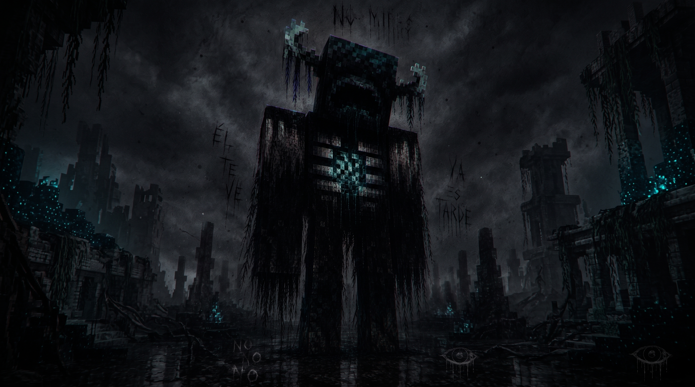

nodo 07 · enlace cifrado · lat -34.6 lon -58.4
INSERTAR CONTRASEÑA
> Se detectó una transmisión entrante sin origen.
> El canal permanece abierto desde hace 11 h 42 m.
> Autenticación requerida para decodificar la señal.
> Se detectó una transmisión entrante sin origen.
> El canal permanece abierto desde hace 11 h 42 m.
> Autenticación requerida para decodificar la señal.
.-"""""""-.
.' '.
/ O O \
: :
| |
: \ / :
\ '. .' /
'. '-...-' .'
'-.......-'
